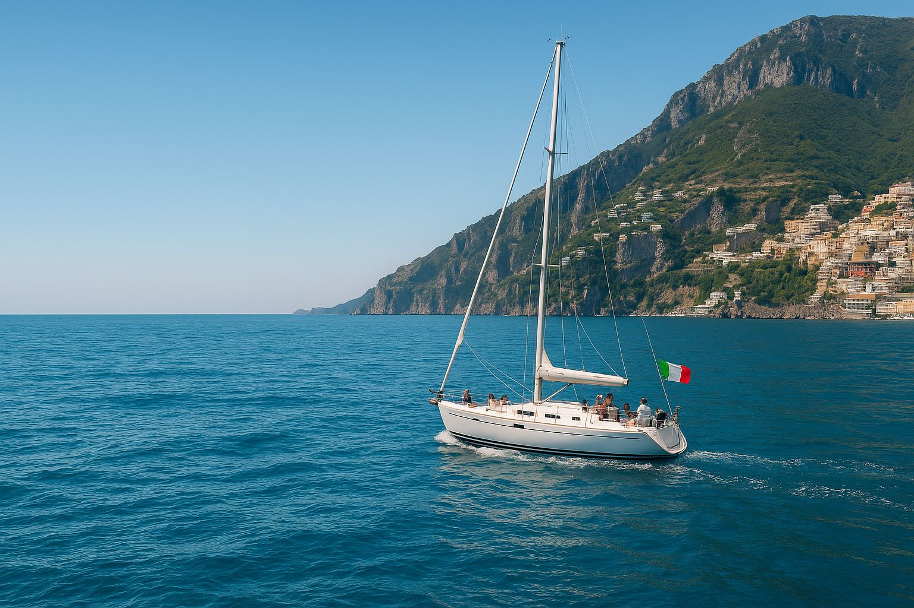

Signature Journey
For those who want to simply arrive and be embraced by the Coast
Your Signature Experience Awaits
Arrive with your suitcase and your curiosity — we'll take care of everything else.
The Signature Journey is a meticulously curated 10-day experience that invites you into the heart of the Amalfi Coast without a single worry on your mind.
You'll immerse yourself in the true essence of this paradise: hidden villages, authentic flavors, golden sunsets, and unforgettable encounters with locals. Everything is designed so you can simply enjoy, connect, and let the magic of this place carry you.
What's Included in Your Signature Journey
- 10 days of carefully curated experiences
- Boutique accommodations & exceptional local hosts
- Seamless logistics and private transfers
- Small groups to create authentic connections
- Daily touches of la dolce vita
- All meals included with wine pairings
- Private boat excursions
- 24/7 personal concierge support
A Glimpse of Your Journey
Welcome to Positano
The jewel of the Coast — where colorful houses cascade down cliffs to meet the sea
Ravello's Enchanted Gardens
Explore terraced gardens, historic villas, and breathtaking panoramic views
Private Capri & Blue Grotto
A luxurious boat excursion to the island's most magical corners
Culinary Immersion
Vineyard tastings, farm-to-table dining, and cooking with Nonna
Pompeii Unveiled
Walk through ancient history with expert local guides
Vespa Adventure & Sunset Sail
Ride scenic coastal roads and toast the sun as it dips into the Mediterranean
Farewell Celebration
A special seaside dinner under the stars — carrying memories that last forever
This is your invitation to live the Amalfi Coast — not just visit it.